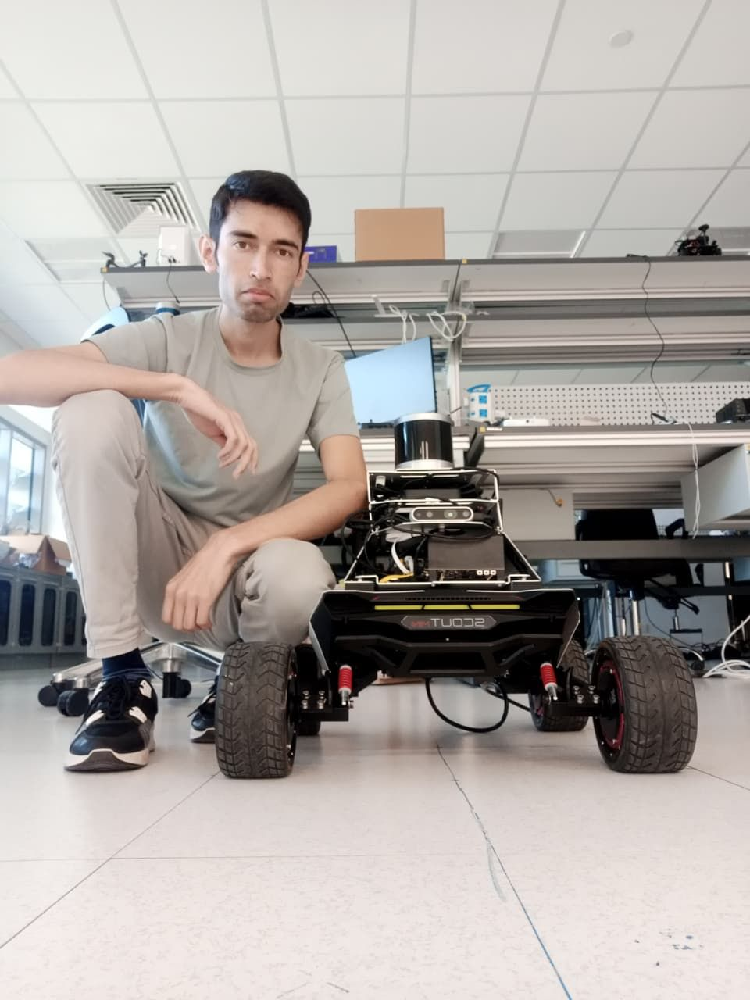

PHYSICAL ROBOTICS · ROS 2Autonomous navigation · Multimodal perception
SCOUT MINI Pro — Robust Perception & Person Following
Developed a ROS 2 Humble mobile-robot platform integrating RGB-D vision, 3D LiDAR, SLAM, Nav2, obstacle avoidance and person following. Investigated independent LiDAR validation and asynchronous Kalman fusion to assess perception reliability under controlled sensor faults.
Methods: ROS 2 · RGB-D · 3D LiDAR · SLAM/Nav2 · statistical validation · Kalman filtering
Ongoing researchRequest details ↗